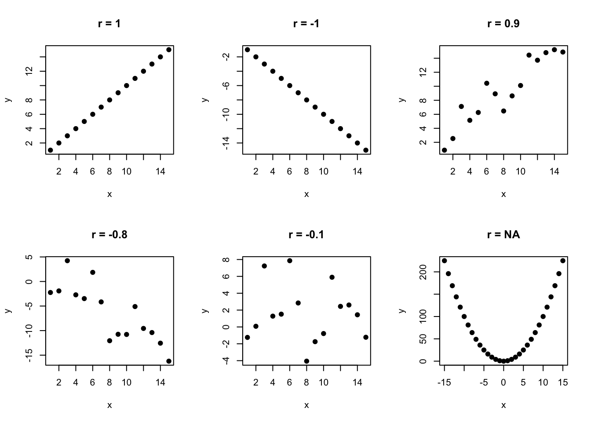

Pearson correlation coefficient, or rather more correctly Pearson product moment correlation coefficient, gives us an idea about the strength of association between two numerical variables. Its true value in the population, \(\rho\), is estimated in the sample by \(r\), where:
the sign indicates whether, in general, one variable increases as the other variable increases (\(r > 0\)) or whether one variable increases while the other variables decreases (\(r < 0\))
the magnitude indicates how close the points are to the straight line, in particular \(r=1\) for a perfect positive correlation, \(r=-1\) for a perfect negative correlation and \(r=0\) for no correlation
Code
# simulate data with different levels of correlation# no. of observations to generaten <-15# perfect positive correlationx1 <-1:ny1 <-1:ncor1 <-cor(x1, y1) %>%round(2)# perfect negative correlationx2 <-1:ny2 <--1*(1:n)cor2 <-cor(x2, y2) %>%round(2)# positive correlationset.seed(123)x3 <-1:ny3 <- x3 +rnorm(n, mean =1, sd =2)cor3 <-cor(x3, y3) %>%round(1)# negative correlationset.seed(123)x4 <-1:ny4 <- x4*(-1) +rnorm(n, mean =1, sd =4)cor4 <-cor(x4, y4) %>%round(1)# no correlationset.seed(123)x5 <-1:ny5 <-rnorm(n, mean =1, sd =4)cor5 <-cor(x5, y5) %>%round(1)# quadratic relationshipx6 <--n:ny6 <- x6^2par(mfrow =c(2,3))plot(x1, y1, xlab="x", ylab="y", main =paste("r = ", cor1, sep=""), pch=19)plot(x2, y2, xlab="x", ylab="y", main =paste("r = ", cor2, sep=""), pch=19)plot(x3, y3, xlab="x", ylab="y", main =paste("r = ", cor3, sep=""), pch=19)plot(x4, y4, xlab="x", ylab="y", main =paste("r = ", cor4, sep=""), pch=19)plot(x5, y5, xlab="x", ylab="y", main =paste("r = ", cor5, sep=""), pch=19)plot(x6, y6, xlab="x", ylab="y", main =paste("r = NA", sep=""), pch=19)

Limitations
It may be misleading to calculate correlation coefficient, \(r\), when:
there is a non-linear relationship between the two variables, e.g. quadratic
outliers are present
the data include more than one observation on each individual (grouped data)
Spearman correlation and Kendall’s tau use try to overcome some of the above limitations, by operating on ranks, to measure the strength of the association.
6.2 Spearman correlation
To calculate Spearman’s rank correlation between two variables \(X\) and \(Y\) we:
rank the values of \(X\) and \(Y\) independently
follow the formula to calculate the Pearson correlation coefficient using ranks (Equation 6.1)
6.3 Kendall’s tau
To calculate Kendall’s tau, \(\tau\), we compare ranks of \(X\) and \(Y\) between every pair of observation. (There are n(n-1)/2 possible pairs). The pairs of ranks for observation \(i\) and \(j\) are said to be:
concordant: if they differ in the same direction, i.e. if both the \(X\) and \(Y\) ranks of subject \(i\) are lower than the corresponding ranks of subject \(j\), or both are higher
discordant: otherwise
\[\tau = \frac{n_C-n_D}{n(n-1)/2}\] where
\(n_C\), number of concordant pairs \(n_D\), number of discordant pairs
For instance, in the below data, the ranks of subjects #1 and #2 are concordant as subject #1 has a lower rank than subject #2 for both the variables. The ranks of subjects #3 and #6 are discordant as subject #3 has a more highly ranked \(X\) value than subject #6 but a lower ranked \(Y value\).
Table 6.1: Example X and Y measurments for 8 subjects with ranks done independently on X and Y.
6.4 In R we use cor() function
Apart from following the above equations by hand, in R we can use cor() function to calculate Pearson, Spearman and Kendall’s tau correlation coefficients.